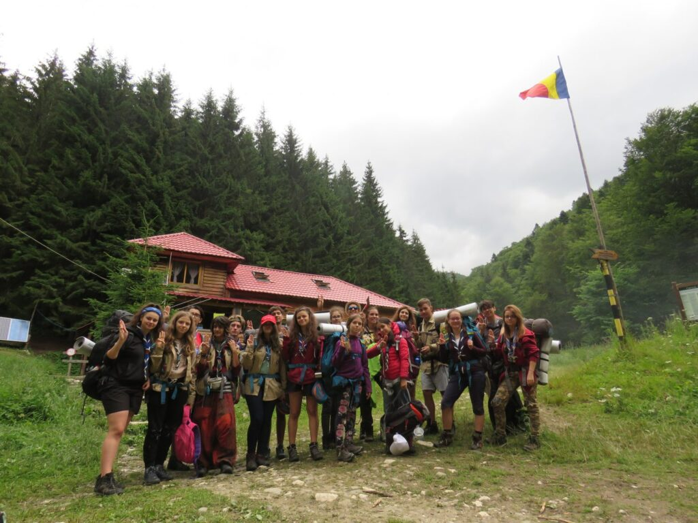

Egiptul Antic – camp 2018

E 6 iulie și la 9:30 ar trebui să ne plece trenul din gară, deci, ca niște copii foarte punctuali ce suntem, ajungem la 9 fără 20 la gară ca să ne luăm bilete – unii pregătiți, alții super-pregătiți, să plecăm în ce se anunță a fi experiența verii. Sper și cred că vorbesc pentru toată lumea când zic că nu a dezamăgit.
Așa că iată-ne, coborâți din microbuz aproximativ 5 ore mai târziu, împărțindu-ne între noi greutățile din rucsacuri că să ne asigurăm că nu ne omorâm umerii chiar din prima zi. Toate bune, ajunși la locul de câmp ne primim fiecare numele după care urma să fim strigați următoarele 10 zile – fiecăruia dintre noi fiindu-i repartizată o personalitate importantă din Egiptul Antic, cadrul simbolic al campului și toate acestea, bineînțeles, abia după ce ne-am ancorat cu toții corturile. Ne-a fost prezentat regulamentul și modul în care vor fi împărțite sarcinile de-a lungul timpului pe care urmă să-l petrecem împreună și așa s-a scurs prima dintre zile, încheiată cu un strop de chităreală în jurul focului.
Construcții de camp, ploaie, fugă după lemne, ploaie, trezire cu goarna, ploaie, “de ce nu vrea focul să stea aprins? trebuie să facem masa”, ploaie, “dacă nu închizi ușa la cort plouă în el”, curățat de toalete în ziua în care ești la curățenie și încă ceva ploaie, dar și voie bună, muncă în echipă, suport moral, încurajări că se oprește ploaia, mâncare bună, chităreală (dar nu după ora de liniște!!), ateliere de noduri, jocuri de improvizație, strigăte noi de patrulă în fiecare dimineață, urmate de ridicarea drapelului și ascultarea imnului național și, într-un final, plantoane, care, pentru mine personal, au fost destul de distractive – toate acestea descriu destul de bine zilele ce aveau să urmeze, mai pe scurt, oportunități foarte bune să ne obișnuim unii cu alții și să ne apropiem mai mult de oamenii cu care nu vorbeam în mod normal. De menționat și hike-ul de noapte până la stână și înapoi, presărat cu momente care sunt mai mult decât memorabile și cu trei sperietori, care, după cum urma să aflăm ziua următoare (după hike-ul de zi al temerarilor și desfășurat pe același traseu) nu arătau la fel de înfricoșător și pe lumină.
Cu o amânare de o zi din cauza ploii, în a cincea zi, opt dintre noi am plecat într-un hike de trei zile, care, pentru mine, după cum mi s-a spus înainte să pornim, a meritat din plin, oricât de afară din zona mea de confort a fost. Pe destul de scurt, prima zi am urcat și am urcat și am urcat prin pădure, am mâncat de prânz și ne am încălzit unii de alții într-o peștera răcoroasă, am mai urcat puțin și am ajuns la refugiul Șpirlea, unde am luat o cină de-a dreptul elegantă și am adormit, dar bineînțeles nu înainte de a ne asigura că am ars destui păianjeni încât rudele și prietenii lor să fie prea speriați să se apropie de noi. A două zi am avut parte de o excursie mică până la un izvor, de unde ne-am luat apă câtă am putut duce, pentru că din câte știam nu urma să mai avem parte de apă până la întoarcerea în câmp, peste două zile. Lanțuri și stânci, multe, multe, multe stânci de urcat, bocanci prinși cu șoricei, dar și flori de colț și capre negre ne-au umplut prima parte a celei de-a două zi, până când am avut norocul (într-o oarecare măsură) de a ajunge la refugiul Șaua Grind chiar la timp pentru a lua masa de prânz și a ne adăposti de ploaia care a fost destul de drăguță să înceapă după ce am ajuns la refugiu, dar care a fost de asemenea destul de obraznică încât să ne amâne ora de plecare înspre refugiul unde urma să înnoptăm, și să ne trimită într-un hike de seară care s-a transformat într-unul de noapte de la Vârful la Om până la refugiul de pe Vârful Ascuțit. Vârf, după vârf, după vârf și bocanci prinși cu șoricei desprinși, dar am ajuns, într-un final, în refugiul unde erau deja instalați alți doi oameni, ceea ce a declanșat o tragere la sorți între băieți, ca să stabilească cine urma să doarmă sus și cine pe jos. Ziua a treia și ultima a hike-ului, a început pentru mine cu o febră musculară cum nu mai simțisem până atunci, dar care la 10 minute după ce am început traseul era abia sesizabilă. Am coborât și am coborât și am mai coborât puțin, timp în care am avut onoarea să mai vedem o capră neagră, mai de aproape, după care am mai coborât ceva și, spre bucuria noastră, am avut parte de apă potabilă, ne-am umplut sticlele și, surpriză, am mai coborât puțin, până în punctul în care ne uităm în sus și nu ne venea să credeam de unde venim. Masa de prânz am luat-o pe Valea Galbena, unde ne-am răcorit și ne-am spălat puțin, după care am ajuns în Plaiul Foii, unde ne-am odihnit și am scăpat de gunoaiele pe care le cărasem până atunci în ghiozdane. Toate acestea doar ca să ne pregătim iar de urcuș, mai lejer de data asta, înspre stâna până la care am urcat în primul hike, de unde urma să coborâm drumul care a părut de 10 ori mai scurt decât prima oară când l-am parcurs. Am ajuns în camp, obosiți și murdari și am fost întâmpinați cu căldură și cu mâncare bună, după care am stat cu toții în foișor și am înșiruit lucrurile pentru care eram fiecare recunoscători, un moment tare simpatic dacă mă întrebați pe mine.
Zilele ce au urmat au fost destul de relaxante, cu ceva soare destul de puternic să facem duș, cu exathlonul, care a devenit o bătălie unde echipa pierzătoare urma să pregătească masa de prânz, cu probele de trecere a temerarilor la exploratori, cu TedX, unde 3 studenți în ultimul an ai Academiei din Alexandria și-au prezentat discursurile de absolvire într-un mod remarcabil și au fost răsplătiți pe măsură, și, în cele din urmă, cu balul cu specific egiptean plin de probe cu grijă alese în urma cărora au fost încoronați regele și regina balului. A urmat o noapte albă de cântece, bezele, povești și porumb copt în jurul focului, care a constituit un final de camp satisfăcător pentru toată lumea, chiar dacă asta a însemnat ca a două zi la ora 7 să fim în picioare și funcționabili, să reușim să strângem tot astfel încât să nu rămână în urma noastră dovezi fizice că am petrecut 10 zile în locul de camp. Înainte sa plecăm, am îngropat capsula timpului la care am contribuit cu toții cu câte un obiect cu valoare sentimentală, cu promisiunea că ne vom întoarce peste ceva ani să o dezgropăm.
Așadar, sper că vorbesc pentru toată lumea când zic că ne-am întors măcar puțin schimbați cu toții, că abia așteptăm să ne întoarcem să dezgropăm capsula timpului și că abia așteptăm următoarea ieșire.
Aida Lungu, eXplorator